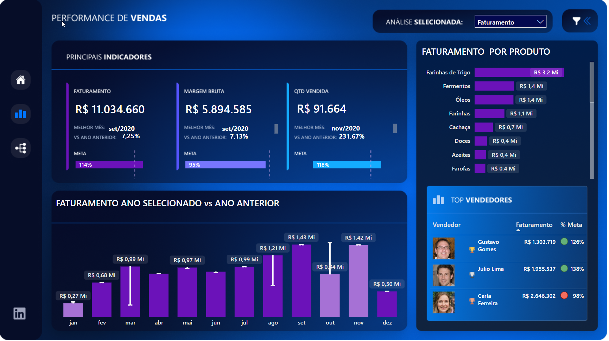
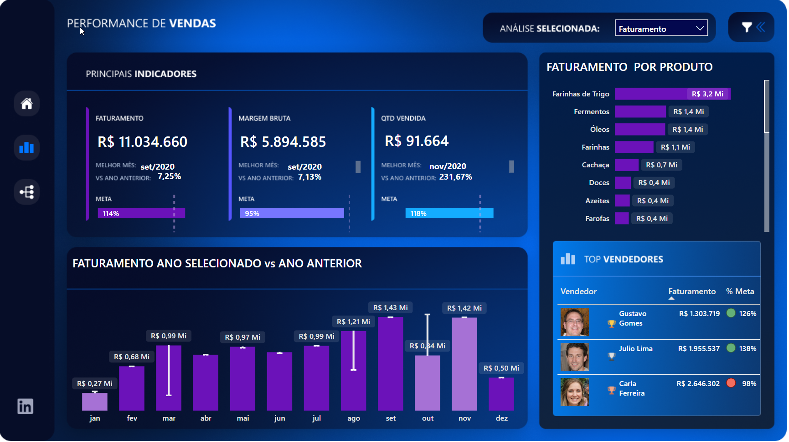
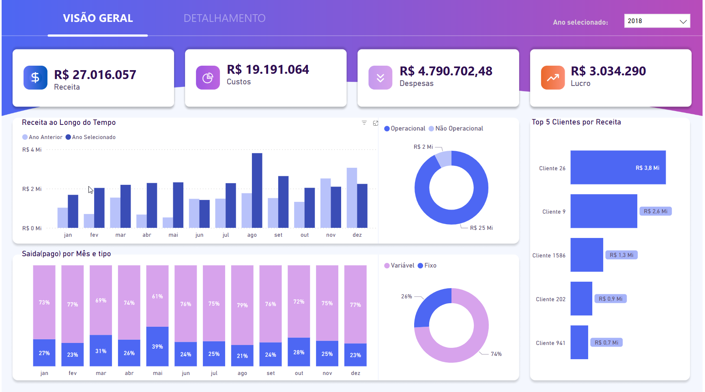

Dashboard de Vendas
Este é um dashboard interativo que apresenta os dados de vendas em tempo real.
Este é um dashboard interativo que apresenta os dados de vendas em tempo real.
Este dashboard oferece uma visão clara e detalhada de métricas financeiras importantes.
